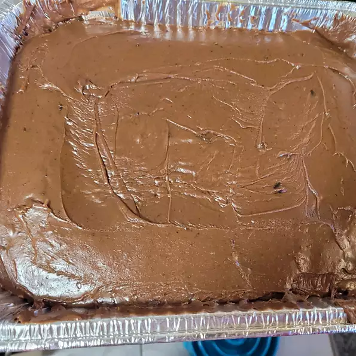

Chocolate Cake

Description
I like chocolate a lot and that is why I have take this recipe
from this website
and writing it down in this website
Ingredients
- 1/2 cup butter
- 1/2 cup shortening
- 1 cup water
- 1/4 cup unsweetened cocoa powder
- 2 cups all pupose flour
- 2 cups white sugar
- 1/2 cup milk
- 1 tablespoon distilled white vinegar
- 2 eggs
- 1 teaspoon baking soda
- 1 teaspoon vanilla extract
- 6 tablespoon butter
- 4 tablespoon milk
- 3 tablespoon unsweetened cocoa powder
- 3 cups sifted confectioner's sugar
- 1 teaspoon vanilla extract
Steps
-
Bring to a boil the 1/2 cup butter ro margarine, 1/2 cup shortening, water and 1/4 cup cocoa.
Remove from heat and add flour, sugar, 1/2 cup milk and vinegar. Mix well. Then add: eggs, baking soda and 1 teaspoon vanilla.
-
Mix well until lumps are gone. Pour into greased 9 x 13 inch pan. Bake at 400 degrees F (205 degrees C) for 20 minutes or until toothpick comes out clean.
-
To make Fudge Frosting: Combine in saucepan, 6 tablespoon butter or oleo, 4 tablespoons milk and cocoa.
Bring to rolling boil. Remove from heat and add 3 cups confectioner's sugar and 1 teaspoon vanilla. Beat until smooth. Spread on cooled cake.